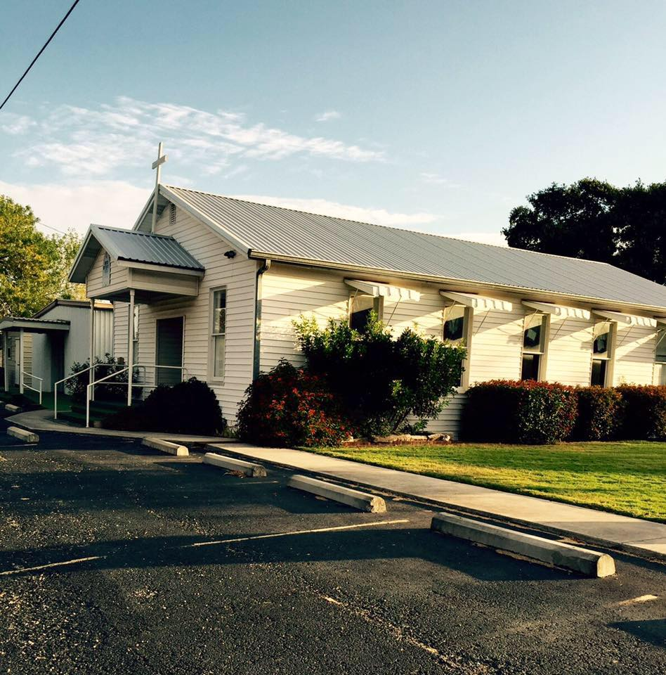

Welcome to a place of Faith, Love, and Community.
We are an inclusive community dedicated to spreading the love of Christ.
Join us in worship and fellowship as we grow together in faith.
We offer a variety of activities and oppurtunities for fath exploration.
Stay updated with our upcoming events and activities.
Learn more about our church's mission and values.
We are a welcoming and inclusive community dedicated to spreading the love of Christ.
If you have any questions or need more information, feel free to reach out.
Address: 7035 FM 2438, Kingsbury, TX, USA
Email: info@kingsbury.church
Phone: (830) 639-4395